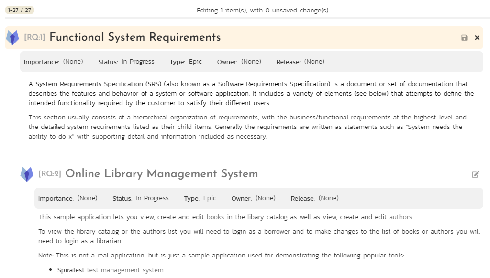
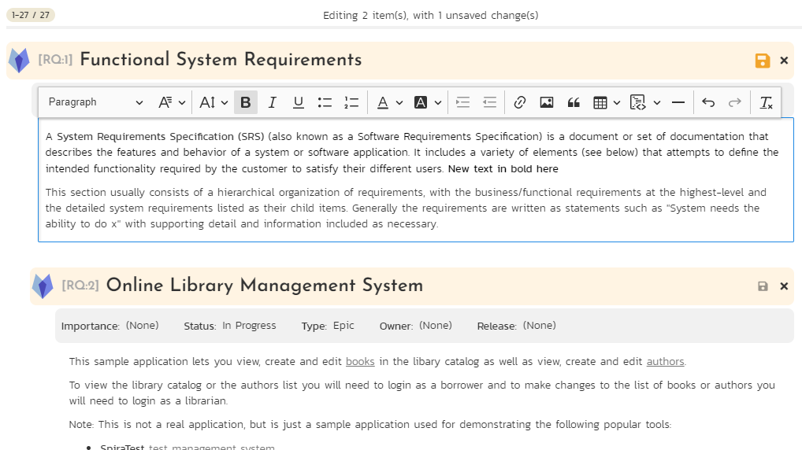
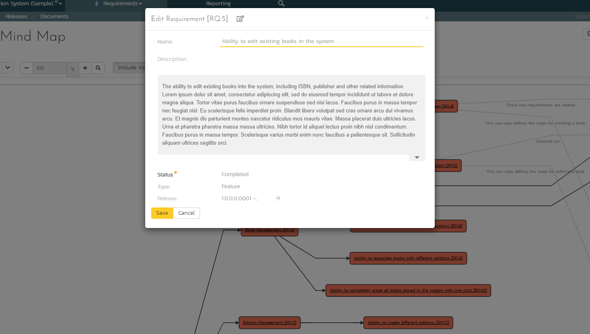
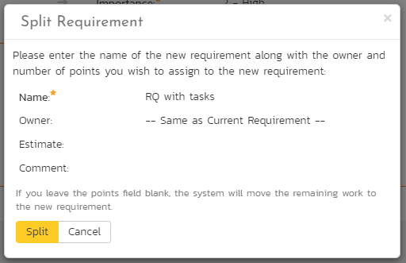

Requirements Management¶
Available in SpiraTest, SpiraTeam, SpiraPlan
| Artifact icon and name | Token | Description |
|---|---|---|
 Requirement Requirement |
RQ | Tracks large pieces of work or product features |
 Requirement (parent) Requirement (parent) |
RQ | Any requirement that has one or more child requirements |
| Requirement (has use cases) | RQ | Any requirement of a type that allows for use case steps |
| Requirement Step | RS | Small steps or scenarios on a requirement that show how that feature works |
Feature Overview and Tips¶
Also known as features or user stories, requirements are used for tracking larger pieces of work and have special features to help you track their progress. You can arrange requirements hierarchically to help you organize them. Use story points to estimate the time required to deliver the feature. When you first start a product, you usually begin by building up the requirements.
- Do not put all your requirements under a single parent (a requirement at the root level that is fully outdented)
- Do make your requirement structure as shallow as possible. This will improve reporting and performance
- Try to limit the total number of requirements to under 20,000 per product. If you think your product needs a lot more requirements than this, consider splitting the product into several products under a single program
- Set the requirement's release to the one when the requirement was first released
- Use associations to link a requirement to other releases that are meaningful to you
- Add all test cases that evidence if a requirement is working as expected or not to the requirement's test coverage
- You can add the same test case to different requirements if you need
- Quickly create test coverage by creating a test case directly from the requirement (from the Test Coverage tab). If the requirement has use case steps, each one will become a test step in the test case
- Releases: link a requirement directly to the release it was first delivered in. You can add associate it to other releases as well, as needed
- Test cases: called "Requirement Test Coverage" this lets you track testing all aspects of a feature and see if all test cases have passed or not
- Tasks: break down the work in a requirement into smaller chunks to help divide up and track everything
- Capabilities: oversee requirements at the program level by linking them to program capabilities
graph TD
RQ{{"`**Requirement**`"}} --> RL(Release);
RQ --> CP(Capabilities);
TC(Test Cases) --> RQ;
TK(Tasks) --> RQ;
RQ -.-> RL;
TS(Test Step) -.-> RQ;
RQ <-.-> RQ2(Other requirements);
RQ <-.-> IN(Incident);
RQ <-.-> RK(Risk);Requirement Traceability and Coverage¶
From the requirement list page you can see a number of columns that show calculated data for each requirement, based off:
- rolling up of information from child to parent
- associations between the requirement and other artifacts (tasks and test cases)
This allows you to see at a glance the state of play about a number of key metrics for the requirement.
Test coverage¶
This column shows a mini chart for the sum of each execution status against the requirement. It is calculated from the current execution status of each test case assigned to that requirement. If a requirement has no test case coverage then the mini chart will be empty. All requirements with at least one test case mapped against them will show a mini chart. For example, if a requirement has 3 test cases assigned to it, then the mini chart will show the results for those 3 test cases. If 2 of those test cases have passed and one has still not been run, the mini chart will show a green bar (for pass) that is ⅔ the length of the chart, and a gray bar (for not run) that is ⅓ the length of the bar.
If you hover the mouse over the mini chart it will display a tooltip that provides a more detailed description of the number of tests in each execution status.
When you have a hierarchy of requirements, the total number of test cases included in the mini chart is the sum of all of the test cases assigned to each of its children, added to the number of test cases directly assigned to the parent requirement.
Example: How Test Coverage Rolls up to Parent Requirements
- You have 3 requirements (A, B, and C) nested one inside the other
- The most nested requirement (C) therefore has a parent (B) and a grandparent (A)
- We assign one test case to C: C has 1 test case against it in the mini chart; B will also have 1; and A will have 1 too
- We now add that same test case to B: C still has 1 test case; but now B has 2 test cases (1 it gets from its child C and 1 is from its own test coverage); and A has a total of 2 test cases as well (0 from itself, and 2 as the sum of its direct children's test cases - in this case B)
The left-hand sidebar on the requirements list page shows an donut chart of aggregate requirement test coverage in the product. It shows segments for each test execution status. It calculates the number for each execution status segment as follows:
- Each requirement in the product gets a score of 1
- This score of 1 is split based on the execution status proportions for that requirement (so a requirement that is 50% passed, 30% failed, and 20% not run gets scores for passed, failed, and not run of 0.5, 0.3 and 0.2 respectively). These values exactly match those you will see in the mini chart on the main list page (discussed above)
- The individual execution status scores from above are summed up across all the requirements in the product
- These totals for each execution status are then shown as proportions on the donut chart
- In this way the sum of the numbers on the donut chart will be the number of requirements in the product (and the sum of all the proportions will be 100%)
Task Progress¶
Requirements with at least one task associated with them will display a task progress mini chart in the Task Progress column. This is a mini chart of the count of all active tasks1 assigned to the requirement. Each part of the chart represents the relative size of that progress category for the requirement. The progress categories are 'On Schedule', 'Late Finish', 'Late Start' and 'Not Started'.
If you hover the mouse over the mini chart it will display a tooltip that provides a more detailed description of the number of tasks in each category.
How are the different categories calculated?
- Inactive tasks are completely excluded
- Each task assigned to the requirement has a count of 1.
- Counts in each category are added together and percentages taken based off those final counts
- Counts for tasks that are either "Running Late" or "On Schedule" are split based off their percentage completion (the done portion adding to the specific category and the remainder adding to the "Not Started" category). So if a task is 40% done it will add 0.4 to, for example, "Running Late" and 0.6 to "Not Started".
-
On Schedule (green) tasks:
- have some work completed on them (percentage complete is more than 0 but is not 100%)
- are not overdue (their end date is not in the future)
-
Running Late (red) tasks:
- are overdue (i.e. with an end date in the past)
- either have a status of "In Progress" or have been partially completed (have a completion of more than 0%)
- have not been fully completed (their completion is not at 100%)
-
Starting Late (yellow) tasks:
- have not had any work done on them (percentage complete is 0)
- have already started (their start date is in the past)
-
Not Started (gray) tasks:
- have not had any work done on them (percentage complete is 0)
- have not yet started: this is the case if either their start date is in the future or they have a status of "Deferred"
Task Effort¶
For each requirement each effort column is calculated from the sum of effort from all tasks assigned to that requirement. These values are aggregated to any parent requirements:
- Task Effort: the sum of all tasks' estimated efforts
- Actual Effort: the sum of all tasks' actual efforts
- Remaining Effort: the sum of all tasks' remaining efforts
- Projected Effort: the sum of all task projected efforts
Task effort calculations are described in more detail here.
Standard Requirements and Parent Requirements¶
Requirements come in two main flavors (Both can be mapped against test cases for test coverage):
-
Standard requirements are any requirements that are not parents (do not have children). These are shown in normal-type and with a normal icon (for either a requirement or a use case). Standard requirements, unlike parent requirements, can:
- assign a point estimate to themselves
- change their status directly (you cannot edit it on the list pages, or on the details pages using the workflows). Note that combined with certain Planning Options the requirement status may be updated automatically
-
Parent requirements are any requirement that has at least one child inside it. Parents are shown in bold-type and have a special parent requirement icon. They are marked as "Yes" when viewing the "Is Parent?" column on the requirement list pages. Parent requirements get some information based on their children (and are therefore always read only):
- estimate points, which is the sum of the estimates of its children
-
status, which is based on the status of their children:
- if any child has a status of "Under Review", "Accepted", "Planned", or "In Progress" the parent will match that status (statuses to the right override those to the left). For example, if a parent has 2 children with statuses of "Accepted" and "Planned", the parent status will be "Planned".
- if any child (but not all children) has a status of "Developed", "Tested", or "Completed" the parent will have a status of "In Progress"
- if all children have a mix of statuses "Developed", "Tested", or "Completed" the parent will have the "earliest" status. For example, if a parent has 2 children with statuses "Developed" and "Completed" the parent will have a status of "Developed", but if both children have a status of "Tested" the parent will also have a status of "Tested".
- if all children have the same status from one of the following, the parent will also have that status: "Rejected", "Obsolete", "Ready for Review", "Ready for Test", "Released", "Design in Process", "Design Approval", or "Documented".
When you indent a requirement under an existing requirement, the normal requirement becomes a parent requirement. When you outdent a child item, its parent will return to a standard requirement immediately, if it has no other children.
In all other ways these two requirement flavors are the same. For example, both can have any requirement type, both can be assigned to a release, or to a specific owner, and both follow the relevant workflow for their current type.
Requirements List¶
When you click on the Planning > Requirements link on the global navigation bar, you will initially be taken to the requirements list screen illustrated below:

Each requirement is, by default, displayed along with its importance/priority (ranked from "Critical" to "Low"), its completion status (from "Requested" to "Completed"), the version of the software that the requirement is planned for, and graphical indicators that represents its test coverage status and its task progress.
The requirements list consists of a hierarchical arrangement of the various requirements and functionalities that need to be provided by the system in question. The structure is very similar to the Work Breakdown Structure (WBS) developed in Microsoft Product®, and users of that software package will find this very familiar to use. When you create a new product, this list will be empty.
In addition to the features described below, the toolbar also lets you:
Insert¶
Click the Insert button to add requirements. This button let's you add requirements in different ways:
- to insert a requirement above a requirement, select that requirement (click its checkbox) then click Insert
- to insert a requirement below an existing item, use the Insert > Child Requirement option.
- to insert a requirement at the end of the list, click "Insert" with no requirement selected. Note that if the full list of requirements are paginated, the new requirement will be at the bottom of the last page.
Once the new requirement has been inserted, the item is switched to "Edit" mode so that you can rename the default name and choose a priority, status and/or author.
Delete¶
Clicking on the "Delete" button deletes all the requirements whose check-boxes have been selected. If any of the items are summary items, the child requirements are also deleted. If all the children are deleted from a summary item, it changes back into a non-summary item.
Indent¶
Clicking on the "Indent" button indents all the requirements whose check-boxes have been selected. If any of the items are made children of a requirement that had no previous children, it will be changed from a detail item into a summary item.
Outdent¶
Clicking on the "Outdent" button de-indents all the requirements whose check-boxes have been selected. If any of the items were the only children of a summary requirement item, then that item will be changed back from a summary item to a detail item.
Refresh¶
Clicking on the "Refresh" button simply reloads the requirements list (not the entire page). This is useful as other people may be modifying the list of requirements at the same time as you, and after stepping away from the computer for a short-time, you should click this button to make sure you are viewing the most current requirements list for the product.
Edit¶
Each requirement in the list has an "Edit" button display in its right-most column. When you click this button or just double-click on any of the cells in the row, you change the item from "View" mode to "Edit" mode. The various columns are made editable, and "Update" buttons are displayed in the last column:

If you click "Edit" on more than one row, the "Update" buttons are only displayed on the first row selected. You can make changes to all the editable rows and then update the changes by clicking the one "Update" button. Also, if you want to make the same change to multiple rows (e.g. to change five requirements from "In Progress" status to "Completed"), you can click on the "fill" icon to the right of the editable item, which will propagate the new value to all editable items in the same column.

If you want to edit lots of items, first select their checkboxes and then click the [Edit] button on the same row as the Filters and it will switch all the selected items into edit mode.
When you have made your updates, you can either click "Save" to commit the changes, or "Cancel" to revert back to the original information. Alternatively, pressing the <ENTER> key will commit the changes and pressing the <ESCAPE> key will cancel the changes.
Show Level¶
Choosing an indent level from the 'Show Level' drop down box allows you to quickly and easily view the entire requirements list at a specific indent level. For example you may want to see all requirements drilled-down to the third level of detail. To do this you would simply choose 'Level 3' from the list, and the requirements will be expanded / collapsed accordingly.
Filtering¶
Read about how to create and manage filters.
Show / Hide Columns¶
This drop-down list allows you to change the fields that are displayed in the requirement list as columns for the current product. To show a column that is not already displayed, simply select that column from the list of "Show..." column names and to hide an existing column, simply select that column from the list of "Hide..." column names. This is stored on a per-product basis, so you can have different display settings for each product that you are a member of. The fields can be any of the built-in fields or any of the custom properties set up by the product owner.
Copying Requirements¶
To copy a requirement or set of requirements, simply select the check-boxes of the requirements you want to copy and then select the Edit > Copy Items menu option. This will copy the current requirements selection to the clipboard. Then you should select the place where you want the requirements to be inserted and choose the Edit > Paste Items option.
The requirements will now be copied into the destination location you specified. The name of the copied requirements will have " - Copy" at the end, to distinguish them from the originals. Note that copied requirements will also include the test coverage information from the originals.
Moving Requirements¶
To move a requirement in the requirements hierarchy, there are two options:
- Click on the requirement you want to move and then drag it to the location you want it moved. An empty space will appear to show you where it will be inserted:

Once you have the requirement positioned at the correct place that you want it inserted, just release the mouse button. To move multiple items simply select their checkboxes and then drag-and-drop one of the selected items.
- Alternatively, you can select the check-boxes of the requirements you want to move and then select the Edit > Cut menu option. This will cut the current requirements selection to the clipboard. Then you should select the place where you want the requirements to be inserted and choose the Edit > Paste option. The requirements will now be moved into the destination location you specified.
Exporting Requirements¶
Read about how to export artifacts from one product to another.
Creating Test Cases from Requirements¶
To quickly create test cases from a group of requirements, all you need to do is select the check-boxes of the appropriate requirements and then click Tools > Create Test Cases. This will then create new test cases based on the selected requirements.
Creating a Test Set from Requirements¶
To quickly create a new test set from a group of requirements, all you need to do is select the check-boxes of the appropriate requirements and then click Tools > Create Test Set. This will then create new test set containing the test cases that are already mapped to the selected requirement(s).
Printing Items¶
To quickly print a single requirement or list of requirements you can select the items' checkboxes and then click Tools > Print Items. This will open a new window containing a printable version of the selected items.
Focus-On Branch¶
Sometimes you will see a list of filtered requirements displayed and you would like to view all of the items that in the same branch of the requirements tree, even those that don't match the current filter. To view the branch, select the checkbox of the branch and then click Tools > Focus on, and the system will clear the current filters and then expand just the selected branch.
Right-Click Context Menu¶
Spira provides a shortcut -- called the context menu - for accessing some of the most commonly used functions, so that you don't need to move your mouse up to the toolbar each time. To access the context menu, right-click on any of the rows in the requirements list and the following menu will be displayed:

You can now choose any of these options as an alternative to using the icons in the toolbar.
Viewing Requirements from Shared Products¶
If you are displaying the requirements list for a product has required shared from other products, you will see the option on the top-right to view the requirements from the shared product(s):

If you choose the option to show the requirement from 'All Products' and not just the current product, the shared products are displayed, grouped under the name of the product they are being shared from:

Note: Any requirements shared from other products will be read-only and won't display any of their custom properties. However you can expand/collapse these shared requirements and filter using the standard fields.
Requirements Additional List Views¶
Available in SpiraTeam and SpiraPlan only
These four additional requirement list views are designed to better serve the needs of the Business Analyst community who often need different views of requirements than the project teams and project managers. These views are:
- Sorted List
- Agile Board
- Documents View
- Mindmap
You can pick between each of these views using the view selection button group at the top right of any requirement list page.

Note: you can only view requirements from the current product in these four additional views, whether or not you are sharing requirements from other products with this product.
Requirements Sorted List¶
Available in SpiraTeam and SpiraPlan only

This view lets you view the requirements in a flat, sortable list that does not show the requirements hierarchy. You can still see the hierarchy of an item by hovering the mouse over its name to display the tooltip.
This view lets you sort or filter on any of the visible fields.
One major benefit of this view is that when you filter by a field, you only get the items that are a direct match, unlike in the hierarchical grid view, where you also get its parents displayed. It can be useful to displaying a list of only parent requirements.
Toolbar¶
- Add: Click this to add a new requirement. It will appear in this view based on the sorting used. In the main requirement hierarchy, it will be be added at the bottom of the requirement list, at the root level (ie fully outdented). Once the new requirement has been inserted, the item is switched to "Edit" mode so that you can rename the default name and choose a priority, status and/or author.
- Delete: Clicking this button deletes all the requirements selected. If any are summary items, their child requirements are also deleted. If all the children are deleted from a summary item, it changes back into a non-summary item.
- Refresh: Clicking this button reloads the requirements list (not the entire page).
- Edit: this works the same way as on the requirements hierarchy list - see above.
- Filter: Read about how to create and manage filters, and how to sort the artifact list.
- download the list to a CSV file
- Show / Hide Columns: this works the same way as on the requirements hierarchy list - see above
- Clone: To clone a requirement, select it and click "Clone" from the New menu option. When cloning a parent requirement all of its children are also cloned. Cloned items are added to the hierarchical list at the same indent level as the previous bottom most requirement in the hierarchy.
When cloning the requirements note that:
- all standard fields (like type, status and owner) and custom fields are cloned
- description (with formatting) is cloned
- file attachments are cloned
- associated tasks and tests are cloned
- associated incidents, requirements and risks are not cloned
-
followers, comments, and history are not cloned
-
Tools: this dropdown allows to export requirements, create test cases or create test sets from requirements, or to print items.
Right-Click Context Menu¶
To access the context menu, right-click on any of the rows in the requirements sorted list and the following menu will be displayed:
You can now choose any of these options as an alternative to using the icons in the toolbar.
Requirements Agile Board¶
Available in SpiraTeam and SpiraPlan only
This view is similar to the existing Planning Board but only displays requirements, whereas the primary planning board will also include incidents / defects. This gives the requirements page consistency with the tasks and incidents pages that already have a Grid / Board view selector option.
Requirements Document View¶
Available in SpiraTeam and SpiraPlan only
This view shows the hierarchical organization of the requirements in a product. Instead of being displayed in a grid form, they are displayed in a document format that is designed to be readable from top to bottom, like a traditional requirements document. You can edit the name and description fields inline to update your document as you read through it, as well as change what fields are visible, to tailor the document to your needs.

Requirements Document Navigation¶
The sidebar shows all the parent requirements in the product2, in their hierarchy. Clicking on a parent requirement will load that parent with all its children2 into the document view (and save this view for the next time you are on this page for this product). There is a special link at the top of the list of parent requirements called "Level 1 (root)" and clicking on this will load all requirements at the root level (level 1)2. This is the default view you will see when you first visit the documents view. Looking at "Level 1 (root)" is particularly useful if you need to view or edit standalone requirements (requirements that do not have a parent or any children).
When you click a parent requirement (or "Level 1 (root)") from the sidebar, the documents view will show a page of the first 50 requirements. If there are more than 50 requirements you can quickly change pages by using the pagination options at the top right.
Requirements Document Options¶
For each requirement, the following fields are always displayed at the top of the requirement:
- Icon
- Name
- ID
The following fields are displayed by default (but can be hidden) in a header bar, below the requirement name:
- Status
- Type
- Importance
- Owner
The following fields are always displayed, and below the header bar:
- Description
- Use case diagram (if the requirement has steps)
Additionally you can choose to show the following fields in the header bar:
- Author
- Component
- Creation date
- Estimate (points)
- Last updated date
- Outline numbers (this is a special field that shows each requirement's position in the hierarchy as an outline. The first requirement has the number 1, the second 2, the first child of the second 2.1, its child 2.1.1 and so on)
- Release
- Task progress
- Test coverage
- Any requirement rich text custom property (shown below the requirement description - not in the header bar)
To show or hide any of the optional fields, click the "Show/Hide fields" dropdown at the top of the screen and choose your action. When you change which fields are shown, the data will reload to reflect that choice (if you have unsaved changes you will be prompted to discard them or save your changes).
Next to the "Show/Hide fields" dropdown is a print button. Clicking this will allow you to print all the requirements in the current page. If you are on page 2 of 3 in the documents view, you will print all of page 2's requirements only.
Editing the requirements documents¶
To edit the requirements on the documents view your user must have Bulk Edit permissions for requirements in that product. If you have this permission, you will see an edit icon to the far right of each requirement name. Click this to edit that requirement. You can edit the following fields:
- Requirement name
- Requirement description
- Any visible rich text custom properties
In the screenshot below we are editing RQ:1. You can see this because of the requirement name is highlighted, and there are two icons on the far right (save and cancel), instead of the edit icon. RQ:2 is not being edited: we can see the edit icon on the far left. Look at the very top of the documents view and you see in the screenshot a helpful message showing "Editing 1 item(s), with 0 unsaved change(s)."

In this next screenshot, we are editing RQ:1 still, but also now RQ:2. We are currently making changes to RQ:1 (its save icon is now bigger and orange telling us it can be saved). The header message clearly tells us that we have unsaved changes on this page. This is a helpful way of tracking requirements you need to save, because if you are editing several at a time, not all will be on screen at once.

To save your changes, click the save icon. To discard your changes, click the X icon / cancel. If there was a problem saving the requirement you will see an error message explaining the issue.
Requirements Mindmap¶
Available in SpiraTeam and SpiraPlan only
This mindmap displays the first 5,000 requirements in a product as a connected tree view / mindmap. The root node shows the name of the product on the left hand side. The top most level nodes are connected to the left of this, with their successive children shown from left to right.

For each requirement the map displays the name and ID of the requirement, with a tooltip that shows the description and any comments. Each node is color coded by its priority / importance value.
As well as showing the primary hierarchy, there is an option to turn on the display of requirement associations. This will let you see all of the associations as dotted lines. For associations that denote dependencies there is an arrow and dotted line that shows the direction of the dependency. For simple relationship (relates to) associations, there is a dotted line without an arrow. The system will display either the comment or type of association, depending what was entered when the association was created.

There are several other display options:
- refresh: to redraw the mindmap
- levels dropdown: lets you select how deep into the mindmap you wish to view. To only show the topmost level requirements, select level 1; to select the top two levels, select level 2, or view everything by selecting "all levels"
- zoom: you can change the zoom between 25% and 100% using the plus and minus buttons. To reset the zoom, click the magnifying glass
Mindmap Inline Editing¶
To view more information about a requirement, click its name. This will open popup with much more detail. If you ctrl/cmd+click on the requirement name it will open the full details page for that artifact. Information shown in the popup includes all standard and custom fields with fields being shown or hidden based on the workflow step that applies to that specific requirement.
You can edit requirements straight from the mindmap. Users with bulk edit permissions can edit a requirement (including adding a new comment) at any time by clicking on the requirement name. This opens a popup with full information about that requirement. At all times, which fields are shown, required, or hidden is based on the workflow step that applies to that specific requirement. To save any changes you must fill in all required fields. Please note: you cannot change the status in this edit mode, to do so open the artifact's detail page (you can do this from the popup by clicking the button next to the artifact's id at the top).
Note: only fields that users are able to edit are shown - fields that are always read only (like the creation date) are not shown in this view.

Requirement Details¶
Inflectra.ai
This page has AI functionality, available to all cloud customers with an active Inflectra.ai subscription.
When you click on a requirement item in the requirements list described in Requirements Management > Requirements List, you are taken to the requirement details page illustrated below:

This page is made up of three areas;
- the left pane displays the requirements list navigation;
-
the right pane's header, which displays
- the operations toolbar
- the hierarchical structure the requirement is in
- the editable name of the selected requirement
-
and the info bar (with a shaded background), which shows:
- token ID
- requirement type
- workflow status transitions (see below)
- test coverage
-
the right pane's tabbed interface with rich information related to the requirement.
Please note that on smaller screen sizes the navigation pane is not displayed. While the navigation pane has a link to take you back to the requirements list, on mobile devices a 'back' button is shown on the left of the operations toolbar.
The navigation pane can be collapsed by clicking on the "-" button, or expanded by clicking anywhere on the gray title area. On desktops the user can also control the exact width of the navigation pane by dragging and dropping a red handle that appears on hovering at the rightmost edge of the navigation pane.
The navigation pane shows a list of the peer requirements to the one selected. This list is useful as a navigation shortcut; you can quickly view the coverage information of all the peer requirements by clicking on the navigation links without having to first return to the requirements list page. The navigation list can be switched between three different modes:
- The list of requirements matching the current filter
- The list of all requirements, irrespective of the current filter
- The list of requirements assigned to the current user
The bottom part of the right pane can be switched between six views: "Overview", "Test Coverage", "Tasks", "Attachments", "History" and "Associations", each of which will be described in more detail below.
Toolbar Operations¶
- Emailing: read about emailing an artifact to colleagues using Spira.
- Followers: read about how to add and manage followers to an artifact.
- Workflows: read about using workflows to change the status of your artifact.
Requirement Splitting¶
Sometimes you may want to split a requirement into two: the original requirement, and a new requirement (based off the original one). The two requirements are associated together after this process. To do this click Tools > Split. This will bring up the requirement split dialog shown below.

In this dialog you are focusing on the new requirement you are creating from performing the split. Here you can:
- change the name of the new requirement (by default, this will be the same as the original requirement)
- set the owner for the new requirement (by default, this will be the same as the original requirement)
- set the point estimate to move from the original requirement to the new requirement
- enter a comment to list against the association between the two requirements (visible after the split on the associations tab)
To complete the split click the Split button.
Notes about how requirement splitting works
-
New estimate:
- this defaults to blank in the split dialog. This will move all the remaining effort to the new requirement.
- The new requirement's estimate cannot be greater than the original requirement's estimate (because this is moving some or all of its estimate to the new requirement).
-
Status:
- the new requirement's status will match that of the original requirement
- if the original requirement's status is "In Progress" AND the new requirement takes all the estimate of the original requirement, the original requirement now has zero estimate left. In this case, the original requirement's status is automatically moved to "Developed". If the original requirement has any other status, no change occurs
-
Tasks are not moved or cloned from the original requirement to the new requirement
- Test Coverage is copied over to the new requirement (and left unchanged on the original requirement)
- Attachments are copied over to the new requirement (and left unchanged on the original requirement)
- All standard and custom field information is copied over to the new requirement
Overview - Details¶
The Overview tab is divided into a number of different sections. Each of these can be collapsed or expanded by clicking on the title of that section. It displays the description, fields and comments associated with the requirement.
The top part of this tab displays the various standard fields and custom properties associated with the requirement. Fields (both standard and custom) are grouped under the collapsible headings (marked by orange text and underline) in the screenshot below. For instance, all fields regarding dates are grouped together in the "Dates and Times" area.

Overview -- Detailed Information¶
The Detailed Information section contains the long, formatted description of the requirement, as well as any rich text custom fields. You can enter rich text or paste in from a word processing program or web page into these fields. Clicking on the shaded areas of one of these detailed fields will display the rich text toolbar.

Overview - Comments¶
Read about how the comments works
Overview -- Scenario¶
If you are editing a 'Use Case' type of requirement, there will be a special 'Scenario' section where you can enter in the scenario steps that define the use case:

This section displays the various steps that a user would perform when carrying out the defined use case. The list of use case steps displays the position number, and the description. If a test case is created from this use-case, the steps will be used to create the test steps.
Clicking on the "Insert Step" button inserts a new step before the currently selected (by means of the check-box) step. Clicking the "Insert Step" button without selecting an existing step will insert a new step at the end of the list. When a new step is inserted, the fields are displayed in "Edit" mode, so the description, field is editable, allowing you to enter the data:

To move the steps in the list, click on the step you want to move and drag it to the location you want it moved.
Test Coverage¶
This tab shows the test coverage information for the requirement in question:

The tab displays a grid containing the test cases already mapped to this requirement. You can filter that list by the test case type, name, status, execution status, execution date, priority, product name and ID. You can remove an existing test case by selecting its check box and clicking the 'Delete' button. This doesn't delete the test case, just removes it from the requirement.
Hovering the mouse over the names of the test cases will display a "tooltip" consisting of the test case name, place in the folder structure and a detailed description.
To add a new test case to the requirement, simply click on the 'Add' button:

You can search for a test case by its ID if you know it (make sure to include the "TC" prefix):

Otherwise, you can search for the test cases by choosing a folder from the dropdown and/or entering a partial name match:

One you have found the desired test case(s), select their check boxes and click the 'Save' button to add them to the current requirement:

Finally, as a shortcut you can click the "Create Test Case from This Requirement" button to create a new test case in the list of covered test cases that will be automatically linked to this requirement. This is useful when you have created a new requirement and want to generate an initial covering test to be fleshed-out later.
Tasks¶
Available in SpiraTeam and SpiraPlan only
This tab shows the list of product tasks that need to be completed for the requirement to be satisfied:

Each of the tasks is displayed together with, by default, its name, description (by hovering the mouse over the name), progress, priority, start-date, current owner, estimated effort, projected effort and numeric task identifier. Clicking on the task name will bring up the Task Details page. This allows you to edit the details of an existing task.
You can perform the following actions on a task from this screen:
- New Task: inserts a new task in the task list with a default set of values. The task will be associated with the current requirement.
- Remove: removes the task from this requirement without actually deleting the task
- Delete: click the arrow next to the Remove button to show the option of completely deleting the task
- Refresh: updates the list of tasks from the server, useful if other people are adding tasks to this requirement at the same time.
- Filter / Apply Filter: Applies the entries in the filter boxes to the list of tasks
- Clear Filters: Clears the current filter, so that all tasks associated with the current requirement are shown.
- Edit: Clicking the "Edit" button to the right of the task allows you to edit the task inline directly on this screen. Only columns visible will be editable.
- Show/Hide Columns: Allows you to choose which Task columns are visible
The system has a series of shortcuts that simplify the editing of requirements and tasks (these can be changed as required in product administration):
- If you create a new task on the requirements page, the priority, release/sprint and owner are automatically copied from the parent requirement. You can change these suggested values before clicking "Save"
- When you assign a release/sprint to a requirement, its status automatically changes to "Planned"
- When at least one task assigned to the requirement changes from "Not Started" to "In Progress", the parent requirement automatically switches from "Planned" to "In Progress"
- When all the tasks under the requirement are completed, the parent requirement will switch to the "Completed" status.
- If you manually move a requirement that has no associated tasks from "Planned" to "In Progress", the system will automatically generate one task under the requirement and use the requirement's planned effort field to generate the task's estimated effort.
Attachments¶
Read about how the attachments tab works
History¶
Read about how the history tab works
Associations¶
| Association Tab Of | Available artifacts |
|---|---|
| Requirements | Releases, Requirements, Incidents, Risks |
Note that incidents can be associated to requirements either due to the directly linking the incident, or as the result of a tester executing a test-run and creating an incident during the test run. In this latter case, the check-box to the left of the association will be unavailable as the link is not editable.
Read more about how to manage and add associations to this artifact
Use Case Diagrams¶
Available in SpiraTeam and SpiraPlan only
Requirements with a list of defined steps displays an extra tab called "Diagram". This display the list of steps as a process flow diagram rather than as a simple list.

You still write the scenario in the main Overview tab as a list of steps, however that list of steps will render as a diagram on this tab. Every step is displayed in the diagram. To make the diagram easier to read, only the first part of the step description is rendered in the diagram.